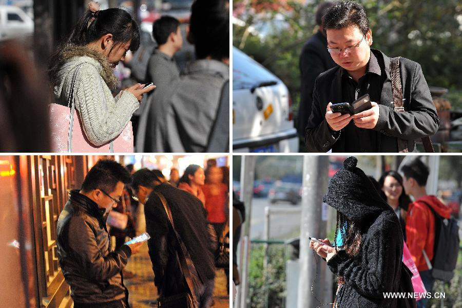
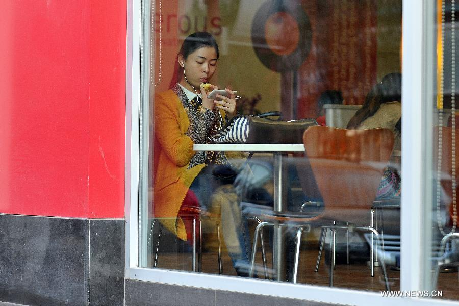
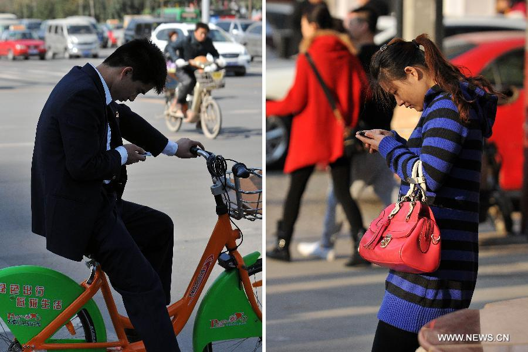
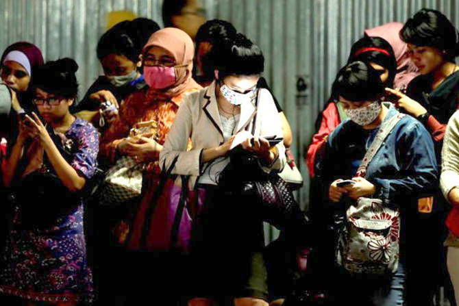
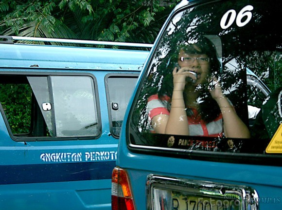
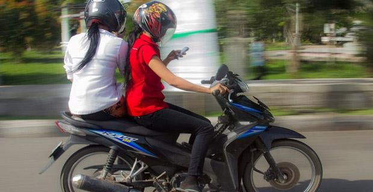
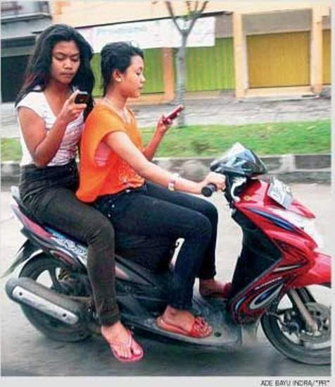
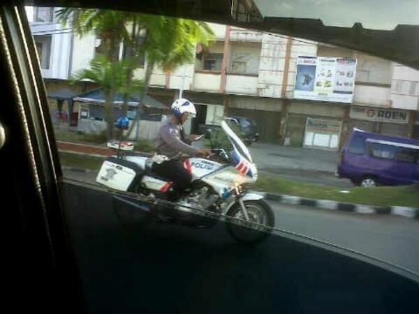
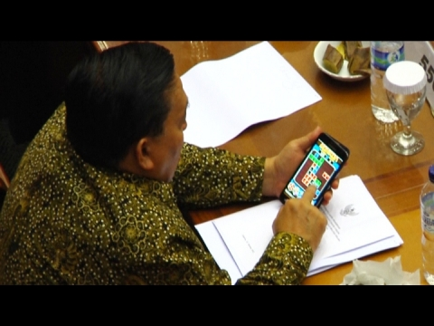
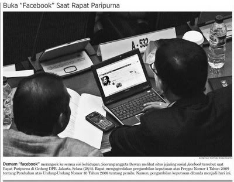

Peran LT/CS
Mengapa ? Apa relevansinya dengan kita?
Fakta - Sekitar Kita

Menyusuri Jalan, Mengusir Bosan #mungkin (source: news.cn)
Fakta - Sekitar Kita

Menikmati Gorengan #sepertinya (news.cn)
Fakta - Sekitar Kita

Rehat Sejenak, Nge-twit Dulu #prediction (news.cn)
Fakta - Sekitar Kita
Nanti Jemput Yaaa.. #prediction (news.cn)
Fakta - Sekitar Kita
Zzzzzz #5ninesprobability (portalkesehatan.com)
Fakta - Sekitar Kita
Masa Kecil Generasi Iron Man #komen (theasianparent.com)
Tapi ...
Ah, itu mah di luar negeri semua pak! ...
O.K ... here we go ...
Fakta - Lokal

Sebuah Sudut Mudik Lebaran (khabarsoutheastasia.com)
Fakta - Lokal

Halo Angkot 06 ! (Kompas)
Fakta - Lokal

Live Report, Current Speed 80 km/h #janganditiru (eduseabed.blogspot)
Fakta - Lokal

Gawatz, gw lupa update status tadi ... #janganditiru (PR)
Fakta - Lokal

Cek DM dari @TMCPoldaMetro #janganditiru (@galihmontana)
Semua Kalangan
Semua?
Mahasiswa, Karyawan, Profesional, Anak-Anak, Sopir Angkot, Tukang Sayur ... Betul jg ya, sdh jadi milik Rakyat Biasa #manggut2
...
Err ... Rakyat Biasa?? ...
Coba lihat yg ini, mudah-mudahan ini bukan hoax :-D
Dari Rakyat ke Elit

Gadget dulu, Garuda di belakang #dpr (source: N/A)
Dari Rakyat ke Elit

FB Page Sidang Paripurna #dpr (source: N/A)
Dari Rakyat ke Elit
No-Comment #dpr #moral #janganditiru (source: N/A)
Dari Rakyat ke Elit
Di Perancis jg kok ... #parliament (gadgetan.com)
Dari Rakyat ke Elit
Selfie-nya Anak Menteng #komen (nytimes.com)